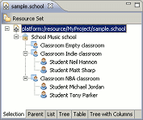
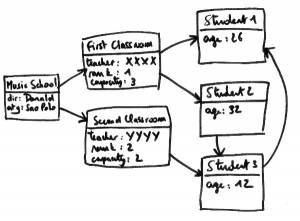
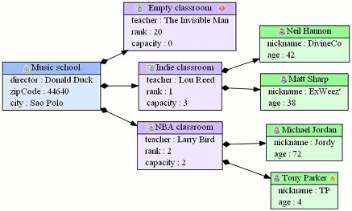
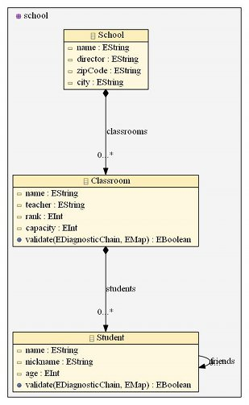

The idea : EMF is a powerful framework that allows to create generic editors to manage your model files. These editors represent the models as a tree in a very convenient way.
The tree representation is particularly adapted to visualize containment references. Unfortunately, when your model has several non containment references, it is not so easy to get a comprehensive representation of the model in the tree view. It is possible to show such referenced objects as child nodes by customizing the generated editor, but that way, a same object instance appears twice ore more in the tree editor and it is not obvious to understand which tree items correspond to the same instance object.
In such cases, the best solution is to build a GMF diagram editor. That way, you get a graphical representation of your model in which references are clearly visible (at least, the ones you choose to represent). Unfortunately, GMF is a complex framework, and when you ecore model is not yet stable, having to keep up to date a GMF diagram editor in each stabilization iteration makes the iterations get longer.
The idea of emf2gv is to provide a lightweight alternative to GMF in such cases allowing to quickly get a read-only graphical representation of any EMF model by simply drawing the EClass instances as nodes and the EReferences instances as edges (like an UML class diagram).
|  |  |
EMF2GV allows to build a graphical representation of any EMF model.
To do that, EMF2GV takes as input the following data :
The graphical description indicates which EClasses, EAttributes and EReferences have to be drawn, and allows to adjust several appearance details (colors, arrow style, and so on). Please refer to the next paragraph for more details.
Emf2gv is also able to build a diagram for a given model file without graphical description. That is why the graphical description is optional. In fact, in such case, emf2fv generates a default graphical description that only resides in memory.
Emf2gv automatically retrieves and draws the EMF Edit plugin icons. Miscellaneous appearance details such as node color, edge style, or font style can be adjusted before rendering the graph through a configuration resource (the graphical description, *.graphdesc). Emf2gv also validates every EObject and shows an error or warning icon when needed.
Here you can see the default result that emf2gv produces with the previous model example (notice the error icon on the "Empty Classroom" node and the warning icon on the "Tony Parker" node) :
The graphical description is the configuration resource that is used to tell emf2gv how to render the diagram. When no graphical description is specified, emf2gv automatically generates a default one with default directives to render the diagram so that emf2gv is ready to use with any model.
One can also create a graphical description (from scratch or through the dedicated wizard) to customize the generated diagrams.
Emf2gv classically represents an EMF model like an UML class diagram (the difference is that emf2gv draws EObjects instances instead of classes as in an UML class diagram). In every node (which correspond to an EObject instance) it is possible to show the EAttributes values (the same maner as an UML class diagram shows the class attributes).
Note : emf2gv also allows to show contained EObjects as nested nodes.
The references between EObjects are classically represented as edges.
Emf2gv has several advanced options that increases the number of ways to render a model diagram. These options make it possible to :
As an illustration, it is thanks to these advanced features that emf2gv is able to render an Ecore model (the following diagram was generated with the school sample ecore model TODO link model school/link feature ecore diagrams) :
